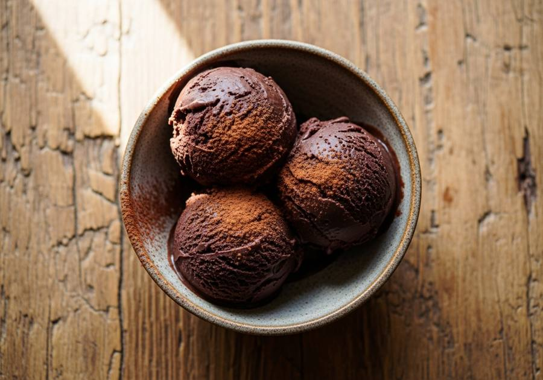

← Alle recepten

🍽 1 pint (4 porties)
⏱ Voorbereiding: 10 min
🔥 Bereiding: 24 uur
Σ Totaal: 24 uur 10 min
Ingrediënten
- 240 ml volle melk
- 180 ml slagroom
- 65 g kristalsuiker
- 2 el cacaopoeder
- 1 tl vanille-extract
Bereiding
- Klop melk, slagroom, suiker en cacaopoeder tot een glad mengsel zonder klontjes.
- Roer het vanille-extract erdoor.
- Giet in de Creami-pint en vries minimaal 24 uur plat in.
- Draai op de stand Ice Cream; gebruik Re-spin als het ijs nog kruimelig is.
Bron: The Big Man's World